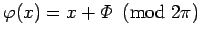

Inhalt Index DeskTop Bronstein

 Dynamische Systeme und Chaos Quantitative Beschreibung von Attraktoren Wahrscheinlichkeitsmaße auf Attraktoren Elemente der Ergodentheorie
Dynamische Systeme und Chaos Quantitative Beschreibung von Attraktoren Wahrscheinlichkeitsmaße auf Attraktoren Elemente der Ergodentheorie


Ein dynamisches System  auf
auf  mit invariantem Maß
mit invariantem Maß  heißt ergodisch (man sagt auch, das Maß ist ergodisch), wenn für jede BOREL-Menge A mit entweder oder 0 ist.
heißt ergodisch (man sagt auch, das Maß ist ergodisch), wenn für jede BOREL-Menge A mit entweder oder 0 ist.
Ist  ein zeitdiskretes dynamisches System (17.3),
ein zeitdiskretes dynamisches System (17.3),  ein Homöomorphismus, M ein kompakter metrischer Raum, so existiert immer ein invariantes ergodisches Maß (Satz von BOGOLJUBOV-KRYLOV).
ein Homöomorphismus, M ein kompakter metrischer Raum, so existiert immer ein invariantes ergodisches Maß (Satz von BOGOLJUBOV-KRYLOV).
| Beispiel A |
|
Gegeben sei die Rotationsabbildung des Kreises S1 mit , definiert durch . Das LEBESGUE-Maß ist invariant unter |
| Beispiel B |
|
Dynamische Systeme mit stabilen Ruhelagen oder stabilen periodischen Orbits als Attraktoren sind bezüglich des auf diesen Attraktoren konzentrierten natürlichen Maßes ergodisch. |
Ergodensatz von Birkhoff: Das dynamische System  sei auf M ergodisch bezüglich des invarianten Wahrscheinlichkeitsmaßes
sei auf M ergodisch bezüglich des invarianten Wahrscheinlichkeitsmaßes  . Dann stimmen für jede integrierbare Funktion die Zeitmittel entlang des positiven Semiorbits , d.h. für Flüsse und für zeitdiskrete Systeme, für
. Dann stimmen für jede integrierbare Funktion die Zeitmittel entlang des positiven Semiorbits , d.h. für Flüsse und für zeitdiskrete Systeme, für  -fast alle Punkte
-fast alle Punkte  mit dem Raummittel überein.
mit dem Raummittel überein.